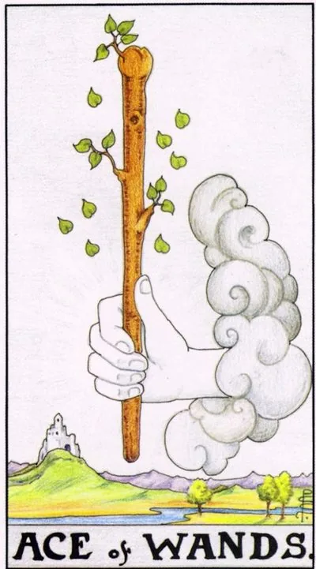

Minor Arcana · Wands
IAce of Wands
A pure spark of fire: a flash of inspiration and determination to start your main business.
Archetype and core meaning
The ace of wands is the root of the element of Fire and the seed of every undertaking. On the card, the hand from the cloud extends a living staff with young shoots: the idea comes as a gift, but it will grow in your hands. In the Kabbalistic way, this is Kether in the world of fire energy, a pure impulse of the will, not yet touched by doubt or form.
The card captures a moment when you have a desire to do something within you -- a project, a book, a move -- not a plan, not a result, but the heat of knowing, "This is mine," and the staff shoots promise that the idea will be viable; it only needs space and a first step; the ace calls you to act at once: its energy is generous, but it's short, and it's easy to dissipate with endless preparation.
Daily life
The day is a wake-up call, and you wake up before your alarm clock, and you have a list of things you want to start, and you have a good time to clean up, to sign up for a course, to send a long-delayed letter, and everything you do with excitement argues, and everything you do out of a sense of duty is stalling.
Work and career
The card is a start: a new project, a job, a business, or a first task that opens doors. The initiative is noticed by the management, the colleagues propose joint plans, and the idea looks audacious and promises growth. The main thing is to turn the idea into concrete first steps while others are still thinking.
Relationships
In love, the Ace of Wands is a flash of passion and a dizziness of novelty; it promises to be a lonely acquaintance that sparks from the first minute; for couples, a renewal of feelings and bold joint ventures; it is a fire of attraction, not quiet attachment: it requires an honest response to mutual tension.
Health
The vitality is high: quick recovery from illness, a surge of physical strength, ease of morning rises, a great time to start training or any practice for the body, the body responds willingly, the only risk of fire is overheating: excessive exertion threatens stretches and overload of the heart.
Spiritual meaning
In magic work, the Ace is the lit candle on the altar: a channel of creative power through which intention passes without distortion. A card is good for consecrating instruments, starting practice, working with the center of the will. It enhances the rituals of success and protection, but it does not tolerate falsehood: fire burns the false.
The spark fades at the start: the idea is there, but there is no movement - doubt, distractions and delays eat up the momentum.
Archetype and core meaning
Turning over, the Ace shows the same fire without air, carries an idea for months, discusses it with everyone, and doesn't take a step, sometimes the card means premature: the ground is not ready yet, and trying to force events will only smoke.
The inverted Ace has two poles: the inner one, fear of failure and anticipation of the “perfect moment,” the outer one, the circumstances that block the start when projects stall and the promised support doesn’t come, the lesson is one: to regain the authorship of your own energy, to understand where it is draining, and rekindle it with small but real deeds.
Daily life
The promising day is broken down into distractions: the work is not finished, the meetings are postponed, the equipment breaks down at the right moment, and it's useful to reduce the list of things to one task and bring it to the end, and it will restore the sense of control of your own energy.
Work and career
The project is delayed: funding is not approved, the contract is signed for the third month, a new place is all the time "the other day," maybe it started without resources or understanding. The worst strategy is to push the wall; the best is to reassemble the plan, pick up the missing skills and restart the idea when it lights up again.
Relationships
Passion doesn't turn into action: correspondence is sluggish, dates are postponed, and in a couple, both wait for the first step from each other. Sometimes the card shows an obsessive fascination with no future, where there is fire, and there is no intimacy. Don't force the feelings - let them mature or admit the spark is false.
Health
There's a lot of energy, but it goes into anxiety and insomnia: the body requires movement, the nerves rest, and this conflict is exhausting. There are pressure surges and inflammations in the flat. Slow down, remove stimulants, start with gentle activity — walks, stretches, swim.
Spiritual meaning
The upside down ace is a closed channel: power comes in jolts, rituals are disrupted, intentions are blurred by someone else's influence, the card may indicate bindings that quench wills, before you start a new one, clean up the unfinished business and get your name back.
🌿 How the school reads this rank
The main idea
Pure fire energy: the desire, the impulse, the willingness to act, and it's not a specific project, it's an inner fire that makes you want to start something.
How it manifests
In work, initiative, charisma, enterprise, leadership, startups, advertising and desire management. In relationships, passion, falling in love and starting a new life stage; a child can be that beginning, too; in self-development, acting, trying new things, and leading.
The shadow side
The potential remains, but the direction is wrong: a person begins to use other people’s desires for his own benefit.
Keywords
desire · initiative · growth · charisma · relevance
📜 In detail — from the rank lecture
Essence of the card
Fire: desires, movement, politics. The leaves on the card are a growing sprout; the guide's rod has become a symbol of patronizing power.
Upright position
- Society/work: charisma, initiative, assertiveness, energy, entrepreneurship, and readiness to act; fashion and advertising as ways of shaping other people's desires; sport and competition over who is better; leadership (not the same as management); relevance and quick reactions (‘fire cannot stand still’).
- Finance: current, fashionable forms of enrichment; startups ("an idea that grows"); interest, asset growth, money flow through accounts, exchange rates, exchange; in the negative - communication for the sake of enrichment, pyramids.
- Relationships: passion, impulsive relationships; family values as a social value (“everyone looks: what a strong family”); falling in love = someone else’s desire to act (Constance channeled d’Artagnan’s energy “in the right direction”); “woman wants – man does”; pregnancy and child as the beginning of a new one.
- Self-development: act energetically ("movement is life"), lead, take into account social interests, try new things, convince.
Negative meaning
• the same potential and passion, but “directed in the wrong direction”; opportunistic – to use other people’s desires, forgetting about their own.
School emphases and distinctive points
- He does not tie the junior arcana to the wheel of the Zodiac - only the older ones (that scheme of Yuri Khan); he disassembles suits through the elements, temperaments, estates.
- Four-parts are everywhere: four evangelists = tetramorph = four elements; the departments of Hogwarts, the peoples of Tolkien, The Wizard of Oz (Buratino added as a wooden image of the consciousness that unites all the elements), Star Wars, Four tankmen and a dog.
- The working model of the lecture is three Musketeers: Porthos = pentacles (company muscles, the dream of a castle - "to become a landowner"), Athos = swords (honor - the correspondence of the word to action: ready to execute a guilty wife according to the rule of law, therefore left the counts), Aramis = cups (a refined connoisseur of the female soul, a future abbot), d'Artagnan = wands (desir of growth, political games, action).
- Top of the water - Eleusinian mysteries and kykeion: a drink of barley and mint with ergot gave religious ecstasy - "to understand directly, without reason"; Dionysus and wine enhance any emotion (at a wedding joy, funeral tears); Viking fly-throbs, shamans with tambourine, holotropic breathing, spinning dervishes; the movie "Noah" and "Blooberry"; the school's reservation: all in moderation, overdose = addiction.
- The Holy Grail is the search for the unspoken, “the unspoken”: a hope for the future that is convenient to believe blindly.
- The dispute about the tambourine / spindle: spindles - swords (the mind weaves the thread of logical events out of chaos), and music is a real tool for breaking reality; the infrasound of a rock concert merges the crowd into a single rhythm - "man is a herd animal."
- Decks: the sign on the ace of cups is not an inverted M, but a straight W is the authorship of Waite; earlier printing was put on deuces (Marseille ribbons), aces were decorated with vignettes (hunting cards of the USSR: the most beautiful ace of worms was considered the strongest).
- There are no Slavic fairy tales; Banzhaf is not quoted; the practice of alignments remains in a closed course.
Keywords
desire, initiative, growth, relevance, charisma.